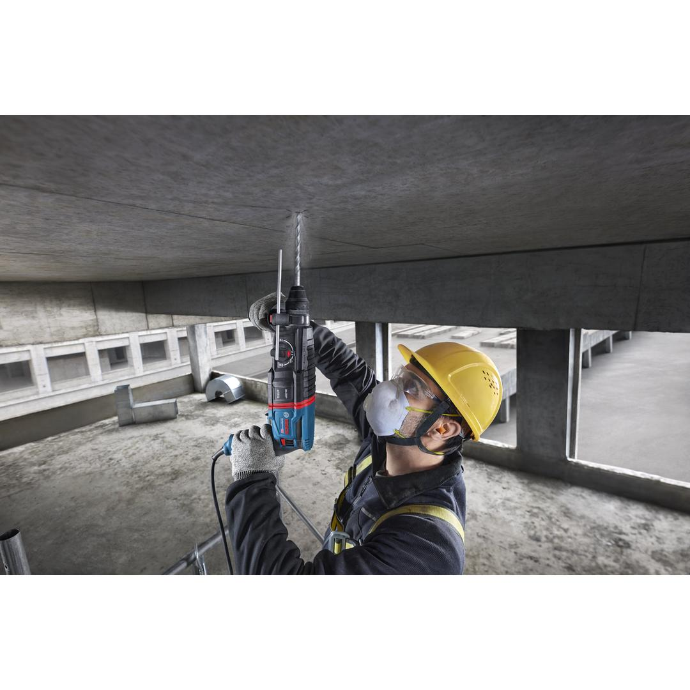
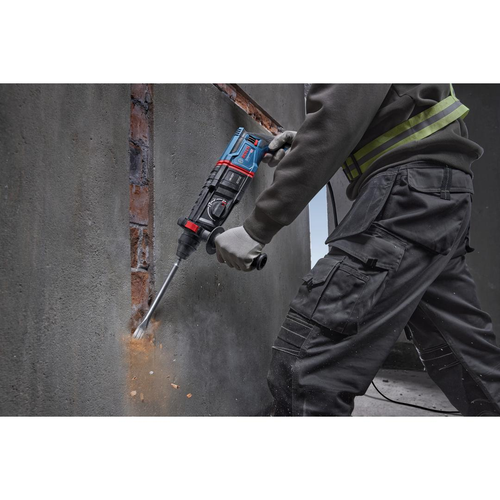
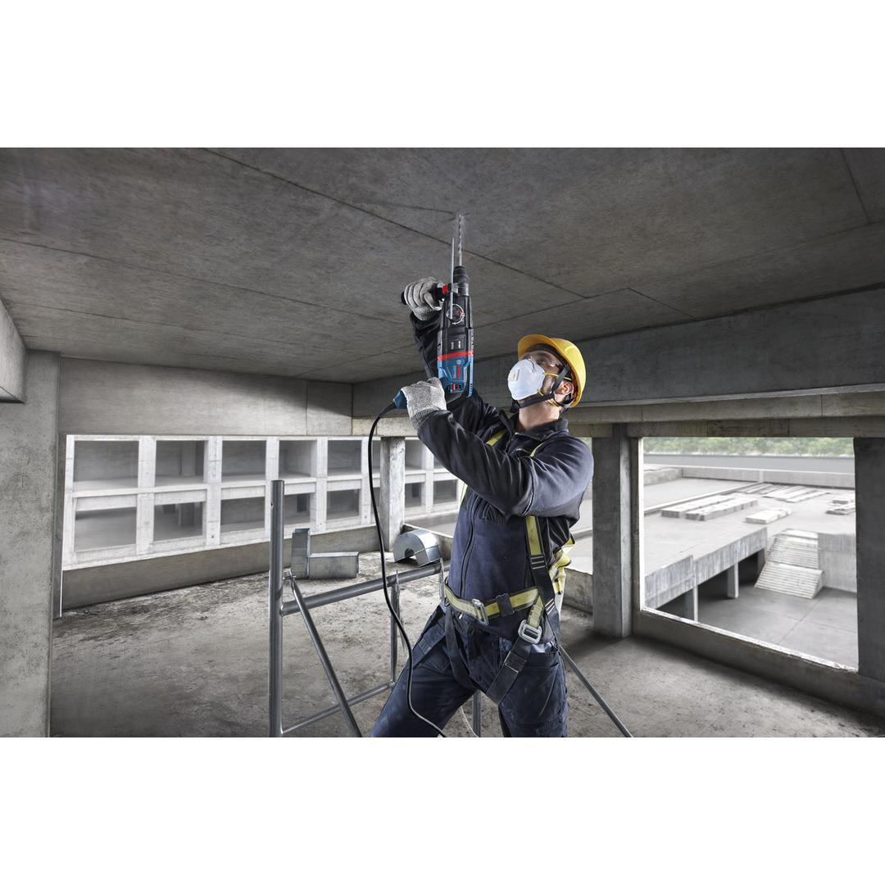
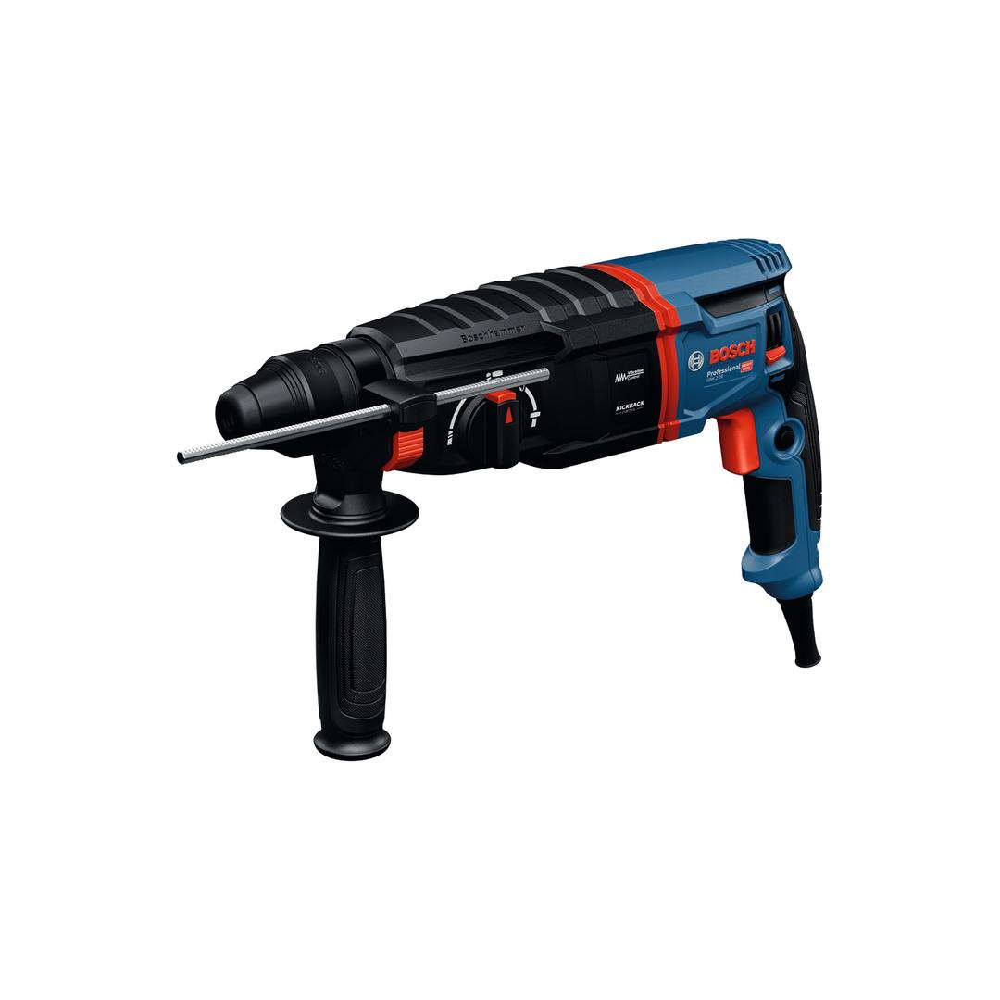
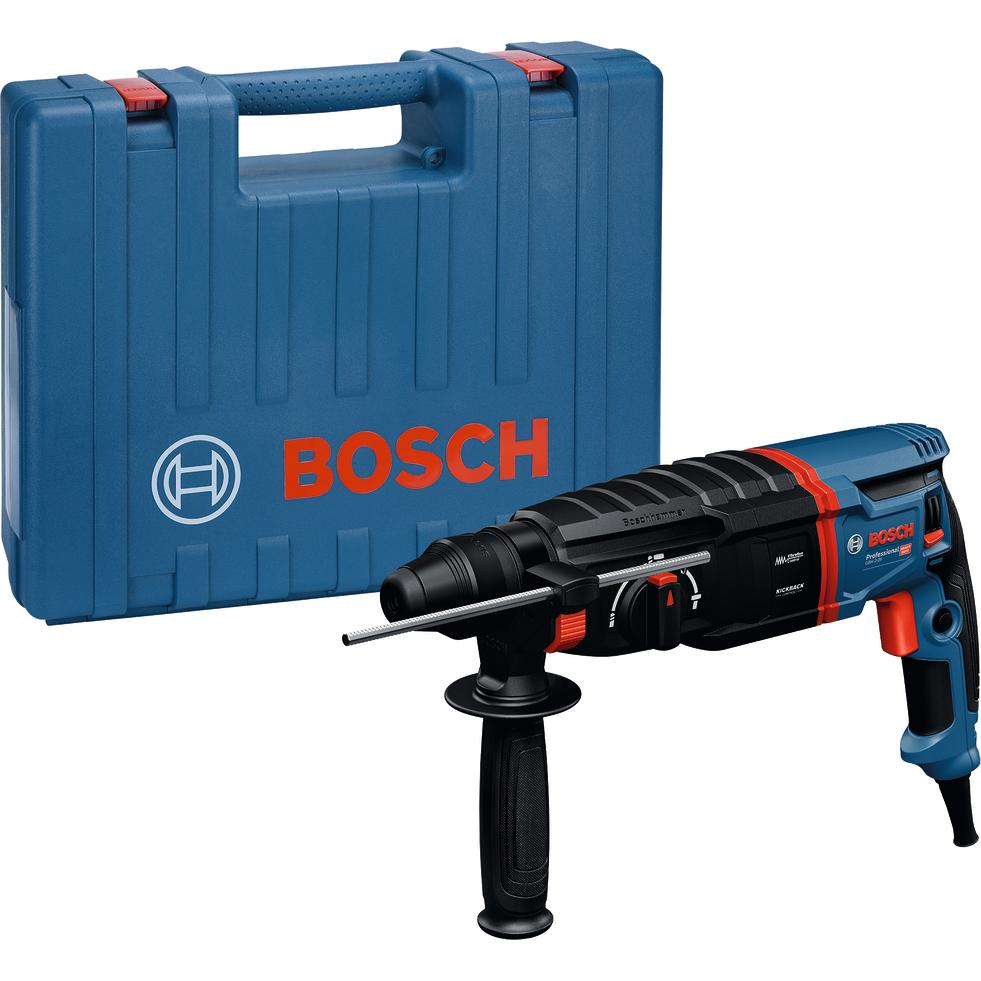

06112534K0





The new generation GBH 2-26 rotary hammer boosts your working efficiency thanks its powerful 830 W motor and optimized striking mechanism. This rotary hammer brings you better protection with KickBack control and minimizes fatigue with vibration control. It is versatile, you can use it on concrete, wood and metal, you get 3 modes including a chiselling function and you can reverse the turning direction of the bit.
| Rated input power |
830 W |
| Impact energy |
3 J |
| Impact rate at rated speed |
0 – 4,350 bpm |
| Weight |
3.000 kg |
| Tool dimensions (width) |
86 mm |
| Tool dimensions (length) |
384 mm |
| Tool dimensions (height) |
211 mm |
| Tool holder |
SDS plus |
| Drilling dia. concrete, hammer drill bits |
4 – 26 mm |
| Opt. appl. range concrete, hammer drill bits |
8 – 16 mm |
| Max. drilling diameter in metal |
13 mm |
| Max. drilling diameter in wood |
30 mm |
High-performance rotary hammer
The new generation corded GBH 2-26 rotary hammer is used for foundations and structures, electrical installations and HVAC applications.
The new generation corded GBH 2-26 rotary hammer offers impact energy of 3.0 J. It’s a corded 26 mm-class tool with both KickBack control and vibration control, vibration level 10% lower than the previous generation.